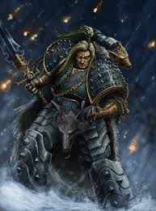

Leman Russ
Leman Russ, conhecido como o "Rei Lobo", o "Senhor do Inverno e da Guerra" e o "Executor do Imperador", é o Primarca da VI Legião, os Space Wolves. Russ era a tempestade devastadora do norte. Ele cultivava uma imagem de bárbaro selvagem para que seus inimigos (e até seus irmãos) o subestimassem, escondendo uma mente tática astuta e uma lealdade inabalável.
Quem é Leman Russ?
Russ foi parar no mundo gélido de Fenris. Ele foi criado por uma loba junto com dois irmãos lobos até ser "resgatado" por humanos da tribo de um rei chamado Thengir. Ele rapidamente subiu ao poder, tornando-se o Rei de Fenris. Quando o Imperador chegou, Russ não se ajoelhou de imediato. Ele desafiou o "Estrangeiro" para três competições: de comer (Russ venceu), de beber (Russ venceu) e de combate. No combate, o Imperador o nocauteou com um soco de luva de energia. Ao acordar, Russ deu uma risada e jurou lealdade eterna.
Características:
O Executor: Russ era frequentemente chamado para punir outras Legiões ou ameaças que ninguém mais conseguia conter. Ele era o "cão de guarda" do Imperador.
Resistência Psíquica: Russ e sua legião tinham uma resistência natural às artes místicas. Seus uivos de guerra podiam interromper poderes do Warp, e seus "Sacerdotes Rúnicos" utilizavam o poder de Fenris de forma única.
Falsa Barbárie: Ele usava peles de animais, bebia grandes quantidades de mjod e agia de forma rústica, mas era um mestre da psicologia de guerra e da disciplina militar disfarçada de fúria.
Lealdade Absoluta: Diferente de outros que questionavam as ordens do Imperador, Russ cumpria seu papel como a arma definitiva do Trono.
Grandes Feitos
A Queima de Prospero: Durante a Heresia de Horus, enganado por manipulações de Horus, Russ foi enviado para capturar seu irmão Magnus, o Vermelho. O conflito escalou para uma aniquilação total. Russ enfrentou Magnus em um duelo lendário, quebrando as costas do Ciclope e forçando os Thousand Sons a fugirem para o Olho do Terror.
O Duelo com Horus: Em um momento crítico da Heresia, Russ tentou o impossível: assassinar Horus no auge de seu poder. Ele conseguiu ferir o Senhor da Guerra com a Lança de Dionísio (a Lança de Russ), uma arma que forçou Horus a encarar sua própria corrupção por um breve momento, quase mudando o curso da guerra.
A Criação do Capítulo Moderno: Após a Heresia, ele resistiu inicialmente à divisão das Legiões em Capítulos menores (o Codex Astartes), mas acabou aceitando para manter a estabilidade do Império, embora os Space Wolves tenham mantido uma estrutura única e rebelde até hoje.
Atualmente: Cerca de 200 anos após a ascensão do Imperador ao Trono de Ouro, durante um banquete, Russ se levantou, seus olhos ficaram vidrados e ele declarou que precisava partir. Ele levou sua guarda pessoal e viajou em direção ao Olho do Terror. Antes de sua partida, ele prometeu aos Space Wolves que retornaria, mas só quando o império estivesse á beira da destruição.
Estilo de Combate
- Combate corpo a corpo brutal
- Velocidade e agressividade
- Estratégia baseada em caça